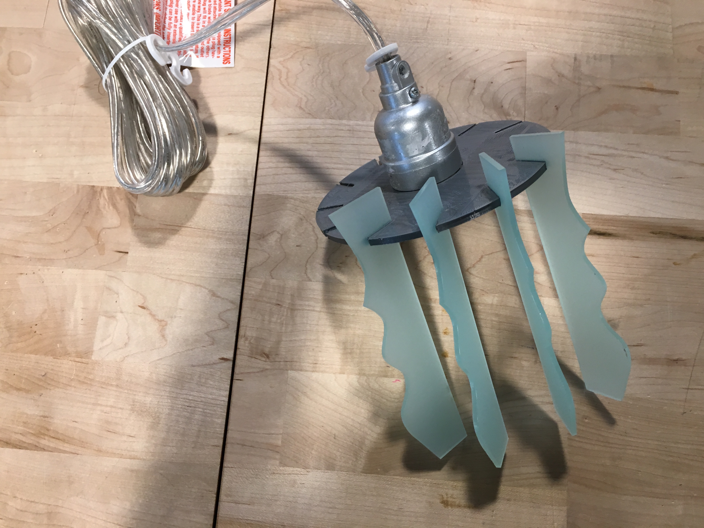

Moving Parts : OnShape
Native AI FileOnShape File

I love gear mechanisms—the above is my inspiration for the direction I took for this project.
However I didn't start here! I spent a few hours looking for moving parts concepts online and
found inspiration in a toy conveyer belt. I abandoned the project because of time and all the pieces
involved, but not before I created the below in OnShape. Building this actually helped me begin to
learn basic Onshape.

Toy conveyer belt inspiration. I sketeched ideas for modernizing the design and sketched-out the parts. I created the roller using the revolve tool.
At this point I pivoted to focus on making moving gears


I began with a open source file for a spur gear and then made changes to the overall size, number of teeth, and height/extrusion.
I measured the "pin" using a caliper and created a center hole = 5.85mm, 2mm larger than the rod to ensure the base would fit through the opening.
MEANWHILE I went shopping for material for the laser pieces of the lamp shade at the front desk.I chose a translucent blue
acrylic because it looked best with my gray filament color.
I designed the "shade" piecies in AI—omg So easy LOL.I put the file on the Mill computer and chose settings of 5/speed, 100
for both frequency/power.I tested before printing on a scrap.

The pieces dropped out with no effort,perfectly.
Now the scary part : Will the acrylic and filament components fit together???

With putting on some pressure and wiggling they did : YAY. NO WAY this will come apart! I also inserted the lighting element
which fit as intended.

Assembled before adding lighting component.

Assembled and lit-up
SHOUT OUT THANK YOU to colleague Andrew and the rest of the Monday afternoon crew who shared
as they learned which printers were unreliable and other tips.